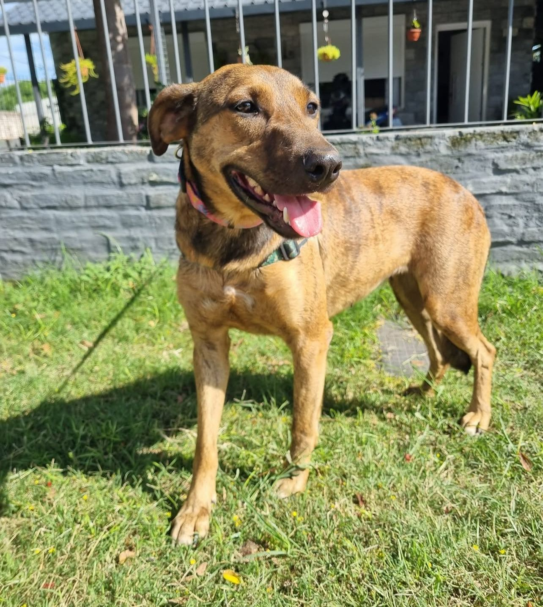

Una segunda oportunidad.
Una vida llena de amor.
Hay historias que esperan a alguien como vos. En ROMA acercamos animales que necesitan un hogar a personas listas para abrirles el corazón.

La historia de ROMA.
Un camino de cuidado, compañía y nuevas oportunidades. Estas imágenes guardan parte de su recorrido.
Conectar para que
ninguna historia quede atrás.
Creemos que todos los animales merecen cuidado, respeto y una familia. Compartimos sus historias y acercamos oportunidades de adopción y hogares transitorios en Paysandú.
¿Cómo podés ayudar?
Cada gesto cuenta. Elegí cómo querés ser parte.
Adoptar
Conocé a los animales que esperan una familia y descubrí quién puede acompañarte.
Ver mascotas ↗UN REFUGIO TEMPORALSer hogar transitorio
Ofrecé un espacio seguro mientras llega la familia definitiva.
Quiero ayudar ↗SUMAR ESFUERZOSColaborar
Compartí, difundí o escribinos para conocer otras formas de colaborar.
Contactar a ROMA ↗Ella es Violeta.
Fue rescatada del vertedero de Paysandú. Hoy está castrada, vacunada y chipeada, lista para empezar una nueva etapa junto a una familia que la quiera para siempre.
Conocer a Violeta →